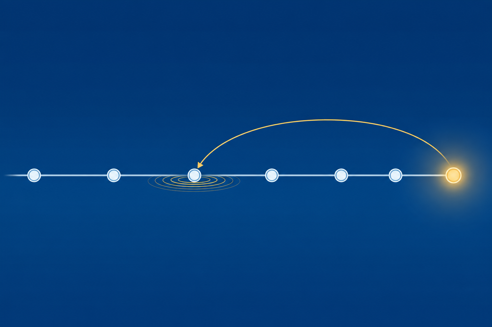

01
Diagnose
a broken connection from the command line, one ring at a time.
Command-line diagnosis, remote access, the tools that show what changed, and the recovery ladder that rewinds a bad change.
Start here: An update installs overnight. By morning one PC cannot reach the internet. Where do you start?
a broken connection from the command line, one ring at a time.
a remote machine with the right tool on the right port.
the failed change with the least drastic recovery tool, then patch forward.
One ticket rides the whole class: diagnosed from the command line, confirmed in the logs, and rolled back before the bell. Watch which tool answers at each step.
Evidence first. Tools second.
:: The full story: IP, subnet mask, gateway, DNS, DHCP C:\> ipconfig /all :: Hand the DHCP lease back, then ask for a fresh one C:\> ipconfig /release C:\> ipconfig /renew :: Read, then clear, the local DNS cache C:\> ipconfig /displaydns C:\> ipconfig /flushdns
Fails? The adapter configuration.
PassFails? The adapter configuration.
PassFails? DHCP options, router config.
FailFails? The resource, then DNS. Try 8.8.8.8.
Not reached:: Ask Google's public DNS for the comptia.org mail servers C:\> nslookup -type=MX comptia.org 8.8.8.8
With a partner: Write all four, then peek.
Remote Desktop wraps the login and the whole session in encryption. You bring the remote system’s IP or FQDN, plus credentials to sign in.
#1402 cannot answer at port 3389 today. Its network is the ticket, so you walk. Tomorrow this dialog saves the trip.
Enter the IP or FQDN of the remote system.
Both still need the user for UAC confirmations.
Off site, a VPN builds an encrypted tunnel to internal systems through the VPN gateway. The rest of the toolkit rides inside it.
With a partner: Name each tool, and the port where one applies.
Two minutes in the System log beat an hour of guessing. Tuesday 11:32 p.m. is our suspect.
Cores and logical processors (HyperThreading). Virtualization status.
In use, committed, cached. Paged and non-paged pool.
Type, capacity, and statistics.
IP and MAC. SSID, signal, and standard for Wi-Fi.
High memory use can be normal. Windows fills RAM on purpose to maximize performance.
The live snapshot.
Advanced detail beyond Task Manager.
Real-time charts. Counter logs and trace logs.
BOOTMGR.EXEWINLOAD.EXEKernelHAL.DLLDriversBOOTMGFW.EFIKernelHAL.DLLDriversTuesday’s update rides the last rung. The chain holds, so Windows starts with a limp instead of not starting at all.
Device Manager > Properties > Driver. Undoes one driver.
Programs and Features > View installed updates. Removes one update.
Rewinds the system to the restore point marker.
No boot at all? Hold Shift and choose Restart to reach WinRE: Start-up repair, Advanced options, and Reset this PC (keep data files or remove everything).
ipconfig /renew pulls a fresh lease. No APIPA.Patch forward: updates fix known issues, so take the repaired driver when it arrives. The restore point habit stays.
chkdsk and bootrec from the prompt. diskpart checks the active partition.With a partner: Name the two repair commands you would run from the prompt, and the tool that verifies the system partition is active.
Name the four ping rings in order. What does a ring 3 failure mean?
The user must invite you and approve control. Which two tools fit, and which port does Quick Assist ride?
Order the rewind: driver, update, restore point. Why start small?

Next step: Run the CertMaster labs: Boot into the Windows Recovery Environment, Create a Restore Point, and Configure the Boot Order. Module 15 locks Windows down.